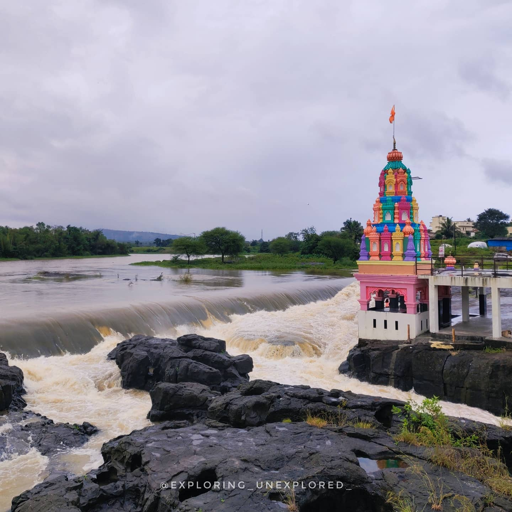
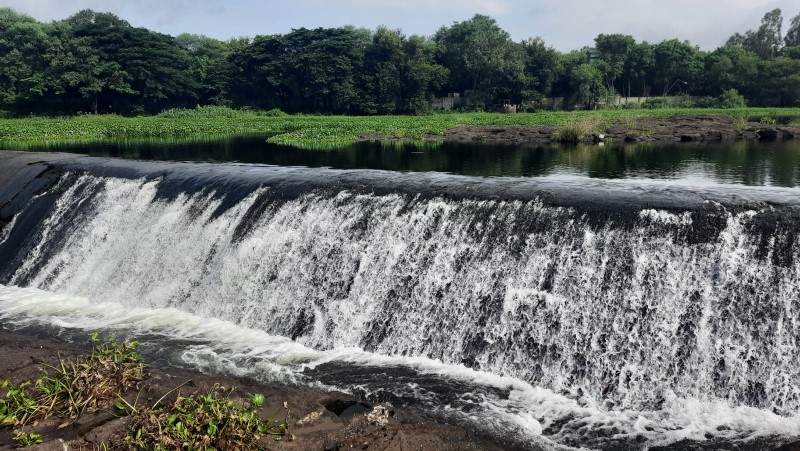
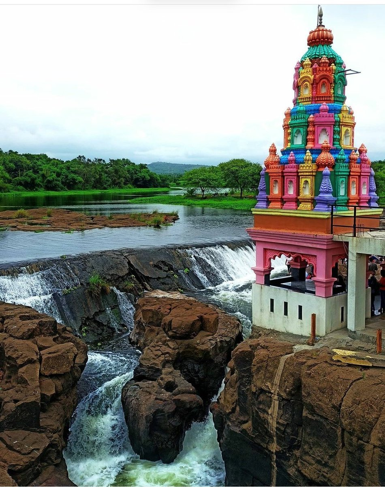
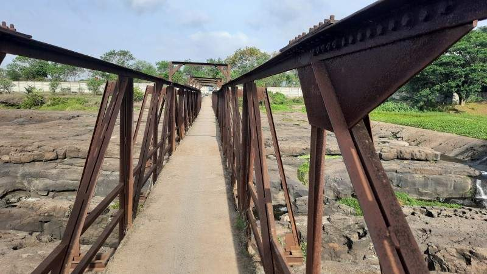

kundmala
Introduction
Kund Mala, situated 30 kilometers from Pune, caught my attention while I was in search of lesser-explored locations near Pune. Learning about this destination unexpectedly, I eagerly prepared myself the following morning to embark on the journey. Arriving at 7:30 am, I was pleasantly surprised to find a substantial crowd already present. Among them were couples, families, and groups of individuals, all drawn to this renowned spot. Notably, Kund Mala holds significant popularity among cyclists, as evidenced by the presence of several cycling groups.The location is wonderfully immersed within the river's scenery. Presently, this spot is gaining widespread popularity, attracting numerous individuals who seek relaxation in the mornings. Undoubtedly, it serves as a petite yet charming picnic destination on the banks of the Indrayani River.
Kund Mala waterfall
A compact dam has been constructed on the Indrayani River. During the monsoon, when a substantial amount of water surges into the Indrayani River, it spills over the dam, creating a captivating sight in the rainy season. Conversely, on the opposite side, the dam serves to retain the water. After the water cascades from this petite dam, it meanders amidst the rocks, resulting in the formation of numerous potholes that bear resemblance to the Nighoje potholes.
The sight spans approximately 300 to 400 meters and presents a picturesque panorama. The water has sculpted the rock, allowing it to flow through the pothole. On one side of the dam, the Indrayani River reaches depths of up to 20 feet, while a paved section of the river maintains a depth of 5 feet, providing a designated area for swimming.
Kund mala Temple :
Facing the dam stands a renowned temple situated in the midst of the river, recognized as the Kundrai Mata temple. Interestingly, this temple holds the status of being the ancestral deity (Kuldevi) for the local community and nearby villagers. Notably, this site carries a religious significance, requiring visitors to offer flowers to the Kund Mala ancestral goddess.

kundmala bridge:
Situated ahead of the temple is a bridge designed to accommodate two-wheelers or pedestrians. The bridge, aged and evoking a sense of trepidation, adds to the allure of the site. Despite its somewhat eerie appearance, this bridge contributes to the enchanting atmosphere, offering a stunning vantage point that reveals the scenic splendor of both banks of the Indrayani River.
I developed a strong fondness for this location; it serves as an excellent spot for a two-hour morning sojourn. I've observed numerous cyclists arriving here to pause and capture the breathtaking vistas of the Indrayani River. Sharing this with you all, this was my personal encounter with Kund Mala. If you've previously explored this destination or intend to do so, kindly share your thoughts here. Additionally, if you have any new recommendations, feel free to suggest places I should explore and capture.